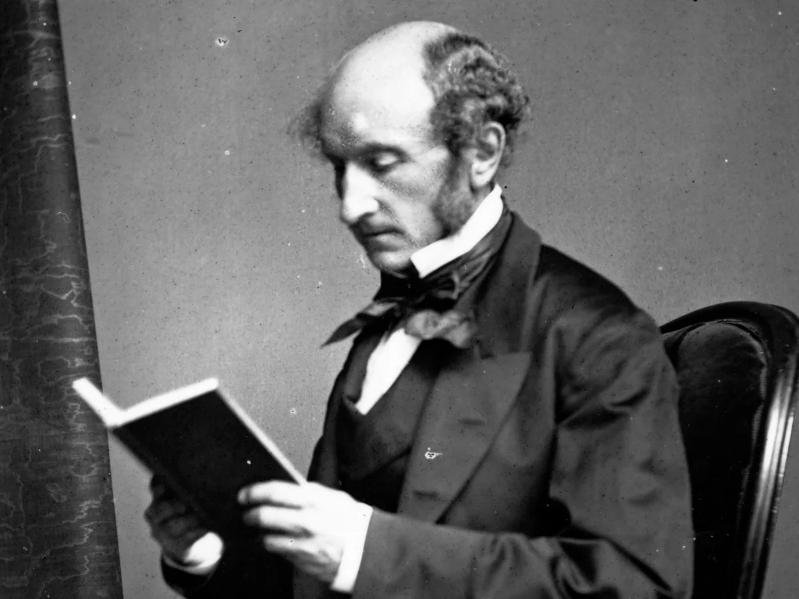

The Problem With Opinionated Arguments
“He who knows only his own side of the case knows little of that.”
— John Stuart Mill, On Liberty
Respectful debates are ones that are based upon facts. There is no disagreement in a debate of what is true, because the truth is binary; it either is true or isn’t. However, there are debates concerning what is right and what isn’t, which overcomplicate the definition of a fact. Having opinions is not the problem, and they are fully necessary. They allow us to interpret the world and embrace different perspectives. Going into a debate with an opinion is essential, but you should also go in with the idea that your opinion may be changed. The moment problems arise is when opinions are disguised as facts and used as evidence, rather than conclusions.

So what turns a debate into an argument? When you go into a debate with the already-formed idea that your opinion will not be changed, you end up going against facts for the sake of not conceding. Emotions and anger being used as a drive to prove the other wrong turns the debate into an argument. You are no longer looking for what is right, but how you can make yourself right. Along with this, using values, experiences, and beliefs that only resonate with your personal worldview is illogical. It leads to a yes-no argument that simply cannot be solved. An argument cannot succeed if it relies on references that the other person does not accept. For example, relying on tradition towards someone who values change will make no progress. The argument of keeping something the way it has always been makes no sense, because that truly doesn’t matter to the other person.
The problem with opinionated arguments is that the more certain we become that we are correct, the less willing we are to understand why someone disagrees. Our goal should not be to completely divide with the other person, because who is to judge when the answer is uncertain? We should debate not for our pride, not to win, but to learn. We should not discuss in order to defeat, but to understand and find an equal conclusion. For the strongest opinions are not the ones protected from criticism, but the ones that are able to withstand it. Thank you for reading Social Science 43, and have a perfect day.
Comments Section
Share your thoughts here!